The Dalesway Walk
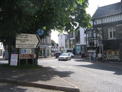 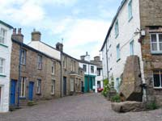 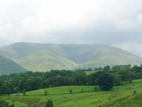
|
The overall length of the Dalesway Walk stretches for 84 miles between Bowness on Windermere and the town of Ilkley in Yorkshire of which 35 miles is within Cumbria. For those choosing to start from Bowness, the walk follows low level ground and provides some lake and mountain views, riversides and grasslands and passing through and close to Staveley, Ings, Kendal, Burneside, Garth Row and Grayrigg before arriving at Sedbergh. Dent is the next Cumbrian stop. It is a large village community of neat stone cottages, a good range of shops, cafés, tea rooms, Post Office and accommodation with the walker in mind. Now the walk enters the 680 square miles of the Yorkshire Dales National Park. This is an area of higher ground, deep valleys, rivers, waterfalls, dramatic views over wide open landscapes of solitude and tranquillity, and scattered remote village communities. The scenic journey through Yorkshire contains several items of architectural interest and among others includes the 24 arch Ribblehead Viaduct of the Settle – Carlisle Railway, the medieval church of Cray, the castle ruins of Barden and the 12th C Bolton Abbey. As with all long distance walks, forward planning is a bonus especially booking accommodation well in advance. Many Bed & Breakfasts are not able to process a payment by credit/debit cards and so it is adviseable to carry cash. Be prepared for changeable weather conditions in this part of the country. Strong footwear and good quality waterproofs are essential. Mobile phone signals may be interrupted during some parts of the route. |
The Dalesway Route
Bowness on Windermere – Staveley – Burneside – Kendal – Garth Row – Grayrigg – Sedbergh – Dent – Cowgill – Ribblehead – Oughtershaw – Raisgill – Hubberholme – Buckden – Cray – Starbotton – Kettlewell – Linton – Grassington – Burnsall – Barden – Bolton Abbey – Ilkley.
| Cumbrian Section Information Bowness – Staveley. 6 miles. Staveley – Burneside. 4 miles. Burneside – Kendal. 1 mile. Kendal – Garth Row. 1 mile. Garth Row – Grayrigg. 3 miles. Grayrigg – Sedbergh. 10 miles. Sedbergh – Dent. 6 miles. Dent – Cowgill. 4 miles. |
Yorkshire Section Information Cowgill – Ribblehead. 6 miles. Ribblehead – Buckden. 13 miles. Buckden – Kettlewell. 4 miles. Kettlewell – Grassington. 8 miles. Grassington – Burnsall. 3 miles. Burnsall – Bolton Abbey. 7 miles. Bolton Abbey – Ilkley. 6 miles. |
Keep up to date with local news and weather reports from Lakeland Radio - 100.1 - 100.8 FM Travel Services |
Dalesway Route Information
| Don't forget your maps - Ordnance Survey Maps OL2, OL7, OL19, OL30, 297. |
|
Dent 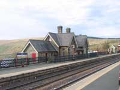 Arten Gill Beck Viaduct 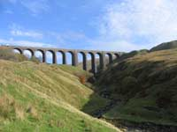
|
Bowness on Windermere Staveley Burneside Kendal Grayrigg Sedbergh Dent Cowgill |

| Dales Bus Discount Scheme Those who travel by public transport can benefit from a variety of discounts. The scheme is simple to use. All you need to do is show a valid bus or rail ticket. Keep a lookout for window stickers in participating cafés, pubs, bed & breakfasts and other attractions. For categories of “Where to Stay”, “Where to Shop & Visit”, “Where to Eat” and full details, go to www.traveldales.org.uk and click on Discount Scheme. |
| Ribblehead Ribblehead is a small village community set in great walking and hiking country. It can experience sudden and dramatic changes in weather conditions as winds swirl around and clouds and mist descend on to the nearby 720 metres high Whernside and the neighbouring Ingleborough and Pen-y-Ghent fells. It was in this area that workers employed on the construction of the imposing Ribblehead Viaduct set up temporary camps which at times were the home to as many as 2000 souls. There are still clearly visible remains of tramway embankments used during construction phases. The neat well kept unmanned railway station is a stop on the Leeds-Carlisle route and a popular gathering place for photographers and onlookers as giant locomotives hauling excursion trains make an exciting spectacle as they “make smoke” on the long upward gradient. Ribblehead has a comfortable welcoming pub and all the peace and quiet one could wish for in a countryside generous in it's displays of wild unspoiled landscapes. |
| For up to date local news, issues and interests during the Yorkshire section of the walk, tune in to Drystone Radio on 106.9 FM. www.drystoneradio.co.uk |
Buckden Area Hubberholme Upper Wharfedale Fell Rescue. www.uwfra.org.uk Kettlewell Linton Grassington Burnsall Appletreewick, Barden, Bolton Bridge, Bolton Abbey and Addingham are truly representative of traditional Yorkshire village communities. Together they present a large selection of holiday and overnight accommodations with choices of hotel, bed and breakfast, self catering, caravan and camping sites, and bunk-houses, all in and close to the Yorkshire Dales National Park and the ever popular Bronte Country. Ilkley Tourist Information Centre - Tel: 01943-602319. |
Kettlewell 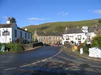 Grassington 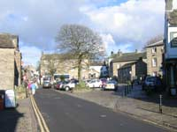 |
Start of the Dalesway Photographs:
Click to enlarge
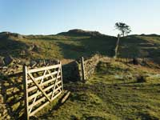 |
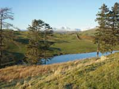 |
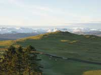 |
{kind=link}
{kind=link}
{kind=link}
Yorkshire Dales Photographs:
Click to enlarge
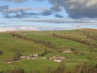 |
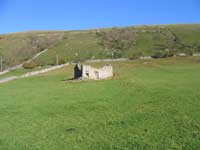 |
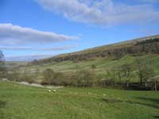 |
{kind=link}
{kind=link}
{kind=link}
Books
See Alfred Wainwright's “Walks in the Howgills” published in 1972. The Dalesway.